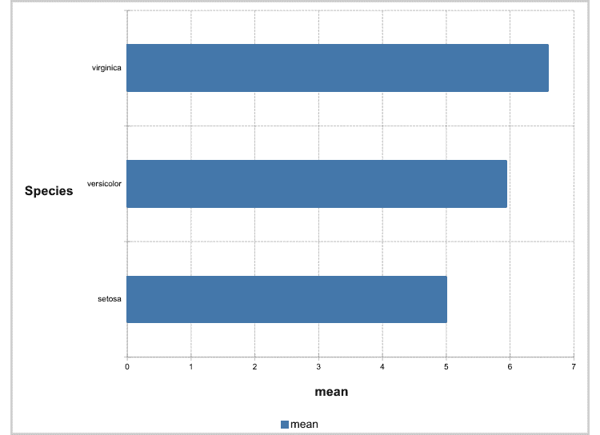
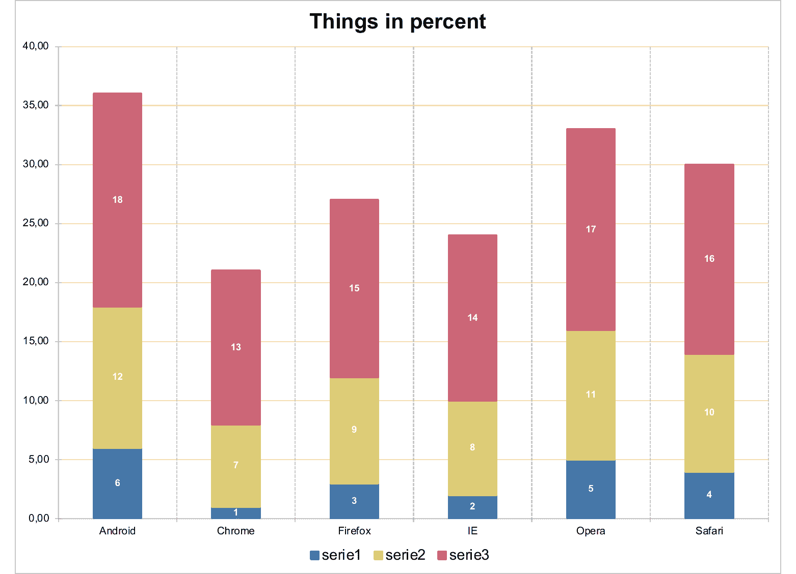
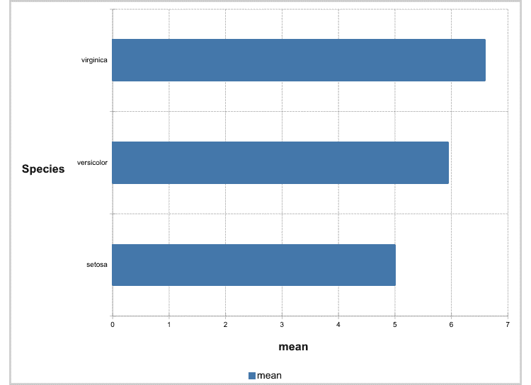
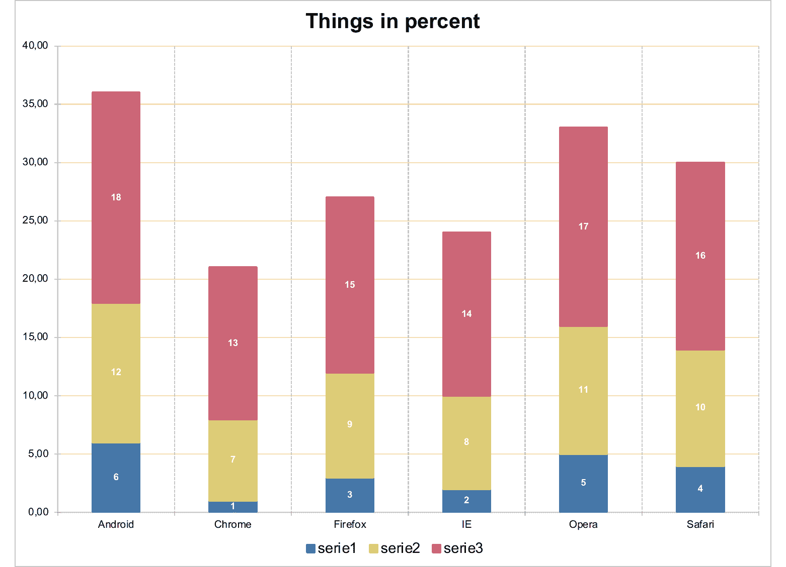

Creation of a barchart object that can be inserted in a 'Microsoft' document.
Bar charts illustrate comparisons among individual items. In a bar chart, the categories are typically organized along the vertical axis, and the values along the horizontal axis.
Consider using a bar chart when:
The axis labels are long.
The values that are shown are durations.
ms_barchart(data, x, y, group = NULL, labels = NULL)
Arguments
| data | a data.frame |
|---|---|
| x | x colname |
| y | y colname |
| group | grouping colname used to split data into series. Optional. |
| labels | colnames of columns to be used as labels into series. Optional. If more than a name, only the first one will be used as label, but all labels (transposed if a group is used) will be available in the Excel file associated with the chart. |
Illustrations
 

See also
Other 'Office' chart objects:
ms_areachart(),
ms_linechart(),
ms_scatterchart()
Examples
library(officer) library(mschart) library(officer) # example chart 01 ------- chart_01 <- ms_barchart( data = browser_data, x = "browser", y = "value", group = "serie" ) chart_01 <- chart_settings( x = chart_01, dir = "vertical", grouping = "clustered", gap_width = 50 ) chart_01 <- chart_ax_x( x = chart_01, cross_between = "between", major_tick_mark = "out" ) chart_01 <- chart_ax_y( x = chart_01, cross_between = "midCat", major_tick_mark = "in" ) # example chart 02 ------- dat <- data.frame( Species = factor(c("setosa", "versicolor", "virginica"), levels = c("setosa", "versicolor", "virginica")), mean = c(5.006, 5.936, 6.588) ) chart_02 <- ms_barchart(data = dat, x = "Species", y = "mean") chart_02 <- chart_settings(x = chart_02, dir = "horizontal") chart_02 <- chart_theme(x = chart_02, title_x_rot = 270, title_y_rot = 0) # example chart 03 ------- mytheme <- mschart_theme( axis_title_x = fp_text(color = "gray", font.size = 20, bold = TRUE), axis_title_y = fp_text(color = "gray", font.size = 20, italic = TRUE), grid_major_line_y = fp_border(width = 1, color = "wheat"), axis_ticks_y = fp_border(width = 1, color = "gray") ) chart_03 <- ms_barchart( data = browser_data, x = "browser", y = "value", group = "serie" ) chart_03 <- chart_settings(chart_03, grouping = "stacked", gap_width = 150, overlap = 100 ) chart_03 <- chart_ax_x(chart_03, cross_between = "between", major_tick_mark = "out", minor_tick_mark = "none" ) chart_03 <- chart_ax_y(chart_03, num_fmt = "0.00", minor_tick_mark = "none" ) chart_03 <- set_theme(chart_03, mytheme) chart_03 <- chart_labels(x = chart_03, title = "Things in percent") chart_03 <- chart_data_labels(chart_03, position = "ctr", show_val = TRUE ) chart_03 <- chart_labels_text(chart_03, fp_text(color = "white", bold = TRUE, font.size = 9)) # example chart 04 ------- dat_groups <- data.frame( cut = c("Fair","Fair","Fair","Fair","Fair", "Fair","Fair","Fair","Good","Good","Good","Good","Good", "Good","Good","Good","Very Good","Very Good","Very Good", "Very Good","Very Good","Very Good","Very Good","Very Good", "Premium","Premium","Premium","Premium","Premium", "Premium","Premium","Premium","Ideal","Ideal","Ideal","Ideal", "Ideal","Ideal","Ideal","Ideal"), clarity = c("I1","SI2","SI1","VS2","VS1","VVS2", "VVS1","IF","I1","SI2","SI1","VS2","VS1","VVS2","VVS1", "IF","I1","SI2","SI1","VS2","VS1","VVS2","VVS1","IF", "I1","SI2","SI1","VS2","VS1","VVS2","VVS1","IF","I1", "SI2","SI1","VS2","VS1","VVS2","VVS1","IF"), carat = c(1.065,1.01,0.98,0.9,0.77,0.7,0.7, 0.47,1.07,1,0.79,0.82,0.7,0.505,0.4,0.46,1.145,1.01, 0.77,0.71,0.7,0.4,0.36,0.495,1.11,1.04,0.9,0.72,0.7, 0.455,0.4,0.36,1.13,1,0.71,0.53,0.53,0.44,0.4,0.34), n = c(210L,466L,408L,261L,170L,69L,17L,9L, 96L,1081L,1560L,978L,648L,286L,186L,71L,84L,2100L, 3240L,2591L,1775L,1235L,789L,268L,205L,2949L,3575L,3357L, 1989L,870L,616L,230L,146L,2598L,4282L,5071L,3589L, 2606L,2047L,1212L) ) dat_groups$label <- sprintf( "carat median is %.01f", dat_groups$carat ) dat_groups#> cut clarity carat n label #> 1 Fair I1 1.065 210 carat median is 1.1 #> 2 Fair SI2 1.010 466 carat median is 1.0 #> 3 Fair SI1 0.980 408 carat median is 1.0 #> 4 Fair VS2 0.900 261 carat median is 0.9 #> 5 Fair VS1 0.770 170 carat median is 0.8 #> 6 Fair VVS2 0.700 69 carat median is 0.7 #> 7 Fair VVS1 0.700 17 carat median is 0.7 #> 8 Fair IF 0.470 9 carat median is 0.5 #> 9 Good I1 1.070 96 carat median is 1.1 #> 10 Good SI2 1.000 1081 carat median is 1.0 #> 11 Good SI1 0.790 1560 carat median is 0.8 #> 12 Good VS2 0.820 978 carat median is 0.8 #> 13 Good VS1 0.700 648 carat median is 0.7 #> 14 Good VVS2 0.505 286 carat median is 0.5 #> 15 Good VVS1 0.400 186 carat median is 0.4 #> 16 Good IF 0.460 71 carat median is 0.5 #> 17 Very Good I1 1.145 84 carat median is 1.1 #> 18 Very Good SI2 1.010 2100 carat median is 1.0 #> 19 Very Good SI1 0.770 3240 carat median is 0.8 #> 20 Very Good VS2 0.710 2591 carat median is 0.7 #> 21 Very Good VS1 0.700 1775 carat median is 0.7 #> 22 Very Good VVS2 0.400 1235 carat median is 0.4 #> 23 Very Good VVS1 0.360 789 carat median is 0.4 #> 24 Very Good IF 0.495 268 carat median is 0.5 #> 25 Premium I1 1.110 205 carat median is 1.1 #> 26 Premium SI2 1.040 2949 carat median is 1.0 #> 27 Premium SI1 0.900 3575 carat median is 0.9 #> 28 Premium VS2 0.720 3357 carat median is 0.7 #> 29 Premium VS1 0.700 1989 carat median is 0.7 #> 30 Premium VVS2 0.455 870 carat median is 0.5 #> 31 Premium VVS1 0.400 616 carat median is 0.4 #> 32 Premium IF 0.360 230 carat median is 0.4 #> 33 Ideal I1 1.130 146 carat median is 1.1 #> 34 Ideal SI2 1.000 2598 carat median is 1.0 #> 35 Ideal SI1 0.710 4282 carat median is 0.7 #> 36 Ideal VS2 0.530 5071 carat median is 0.5 #> 37 Ideal VS1 0.530 3589 carat median is 0.5 #> 38 Ideal VVS2 0.440 2606 carat median is 0.4 #> 39 Ideal VVS1 0.400 2047 carat median is 0.4 #> 40 Ideal IF 0.340 1212 carat median is 0.3text_prop <- fp_text(font.size = 11, color = "gray") chrt <- ms_barchart( data = dat_groups, x = "cut", labels = "label", y = "n", group = "clarity" ) chrt <- chart_settings(chrt, grouping = "clustered", dir = "horizontal", gap_width = 0 ) chrt <- chart_data_labels(chrt, position = "outEnd") chrt <- chart_labels_text(chrt, text_prop) chrt <- chart_theme(chrt, title_x_rot = 270, title_y_rot = 0) # example chart 05 ------- dat_no_group <- data.frame( stringsAsFactors = FALSE, cut = c("Fair", "Good", "Very Good", "Premium", "Ideal"), carat = c(1, 0.82, 0.71, 0.86, 0.54), n = c(1610L, 4906L, 12082L, 13791L, 21551L), label = c("carat median is 1.0", "carat median is 0.8","carat median is 0.7", "carat median is 0.9","carat median is 0.5") ) chrt <- ms_barchart( data = dat_no_group, x = "cut", labels = "label", y = "n" ) chrt <- chart_settings(chrt, grouping = "clustered") chrt <- chart_data_labels(chrt, position = "outEnd") chrt <- chart_labels_text(chrt, text_prop)